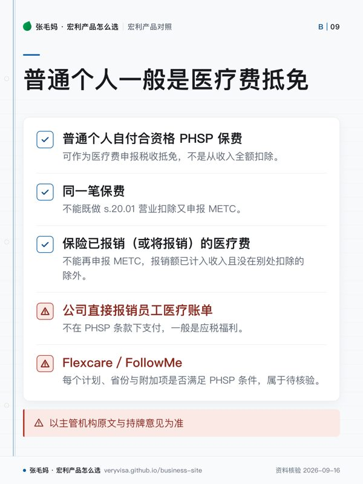

- 解决什么问题省医保不管的处方药、牙科、视力与理疗
- 免问卷窗口FollowMe 须在原雇主福利结束后 90 天内申请并缴首期保费；Guaranteed Issue 无健康问卷
- 费用Flexcare／FollowMe 加入 Vitality 首年省 5%、之后年度最高 10%；Vitality 月费 $5
- 税务后果自雇人士只有在保单符合 PHSP 定义并满足 s.20.01 条件时才可扣除
知识卡
不看正文也能拿到这一页的核心规则：先看导读，再看图。点图放大，左右翻页。
- 先看先判断原福利终止后是否仍在申请窗口内，这会直接影响承保路径。
- 易漏资格窗口不等于原方案照搬；牙科范围和会员费用需要分别核对。
- 下一步去「按产品」，带原福利结束日期找持牌专业人士核对。

- 先看先按付款主体分流：个人、自雇与公司对应不同处理。
- 易漏最易漏掉的是资格前提；魁北克和一人公司不要套用普通情形。
- 下一步去按税务问题，带身份与付款方式找持牌专业人士核对。
省医保不管处方药、牙科、眼镜和理疗，公司福利一旦没了，这些开销就落回自己头上。 Flexcare 是从零开始配的个人计划，FollowMe 是承接公司福利的通道（有 90 天的免健康问卷窗口）， Guaranteed Issue 是不问健康状况也能买的版本。三条线的额度和限制都不同，下面分开列。
Vitality 在这条产品线上是「首年省 5%、之后最高 10%」，与寿险线的机制不同，去看 Vitality 计划； 保费扣除的条件，去看寿险的钱在税上怎么走。
一句话
个人健康牙科险补的是省医保不管的药、牙、眼和理疗；离职或退休丢了公司福利，FollowMe 有 90 天免问卷窗口，过了就没有。保费能不能抵税，先看这份计划算不算 PHSP。
事实清单
- Flexcare 是省级医保与雇主福利之外的补充险，可组合处方药、牙科、辅助医疗（paramedical）、视力与旅行急诊医疗，另有单项的 Catastrophic 药物险与 Hospital 住院险 ✅源；各省额度有差异，官方按省份分 5 份计划对照表发布。✅源
- Flexcare 结构含 ComboPlus Starter／Basic／Enhanced，DrugPlus、DentalPlus 各分 Basic／Enhanced 两级，另有 Catastrophic 与 Hospital 单项。✅源
- 当前 Flexcare 计划包含 TELUS Health Virtual Care 虚拟医疗服务，不另收费；Manulife 写明不保证该权益长期提供。✅源
- FollowMe Health & Dental 承接失去雇主健康福利的人：符合资格、在原福利结束后 90 天内申请并缴首期保费，可免健康问卷承保。✅源
- FollowMe 分 Basic、Enhanced、Enhanced Plus、Premiere 四档，处方药、注册专科／治疗师、视力与住院额度各不同；牙科只含在 Enhanced Plus 与 Premiere 两档。✅源
- FollowMe 是新的个人计划，不是把原公司福利原样搬过来，额度和限制可能不同。✅源
- Guaranteed Issue Enhanced Health & Dental 无健康问卷、无体检，覆盖药物、牙科、扩展医疗、视力、住院与旅行急诊医疗。✅源
- Flexcare 与 FollowMe 加入 Manulife Vitality：首年保费节省 5%，之后年度最高 10% ✅源；Vitality 月费 $5。✅源
- CoverMe 在 SecureServe 提供健康牙科保费收据，并写明自雇人士只有在保单符合 PHSP 定义且满足 s.20.01 条件时才可扣除。✅源
- Flexcare 与 FollowMe 理赔可由服务提供者直接提交，也可客户自行提交。✅源
- 背景：行业协会 CLHIA 称超过 2,700 万加拿大人（约七成人口）有工作场所健康福利；个人健康牙科险面对的是这份福利之外的人。🟡报
与同类产品比较
口径：原料未抓到其他保险公司个人健康牙科险的官方数字；本表比 Manulife 自家三条入口。保费、年度额度、等待期以各计划官方明细为准，本页不写数字。
| 机构／产品 | 核保 | 申请窗口 | 适合谁 | 要先比的地方 |
|---|---|---|---|---|
| Manulife Flexcare | 视计划而定：Starter 与 DentalPlus 免问卷，其余要填健康问卷（官网安省视图） ✅源 | 无固定窗口，资格只列年满 18 岁、有省医保、是本省居民 ✅源 | 自雇、小企业主、独立合同工、新移民 ✅源 | 各档药、牙额度与省份差异 ✅源 |
| Manulife FollowMe | 窗口内免健康问卷 ✅源 | 原福利结束后 90 天内 ✅源 | 离职、退休、失去雇主福利 ✅源 | 新计划额度与原公司福利的差距 ✅源 |
| Manulife Guaranteed Issue Enhanced | 无问卷、无体检 ✅源 | 无固定窗口 ✅源 | 已有病、长期用药 ✅源 | 既往症处理、药物限制、等待期 ✅源 |
税务后果
- 私人健康服务计划（PHSP）须具保险性质，且保费的全部或绝大部分（一般 90% 以上）对应医疗费税收抵免（METC）合资格费用；产品名里有 Health Plan 不等于合资格。✅源
- 普通个人自付合资格 PHSP 保费，可作为医疗费申报税收抵免，不是从收入全额扣除。✅源
- 自雇人士满足 s.20.01 条件（经营收入超过总收入一半，或其他收入不超过 $10,000；向持牌保险公司等投保）时可作营业扣除；没有合资格的全职非关联雇员（或其在受保人中不足一半）时，本人、配偶及 18 岁以上家庭成员每人上限 $1,500／年，18 岁以下家庭成员 $750／年，按天折算。✅源
- 同一笔保费不能既做 s.20.01 营业扣除又申报 METC。✅源
- 保险已报销（或将报销）的医疗费不能再申报 METC，只有没被报销的部分才进计算；报销额已计入收入（如 T4 上的福利）且没在别处扣除的除外。✅源
- 雇主为员工付合资格 PHSP 保费：联邦层面员工不算应税福利 ✅源；魁北克省级规则不同，雇主付的团体保险（含 PHSP）保费对员工是应税福利，要计入 RL-1。✅源
- PHSP 没有最低员工人数要求；但员工兼股东要先判是以员工还是股东身份受益，能显著影响经营决策的，CRA 一般推定以股东身份取得。✅源
- 公司直接报销员工医疗账单、不在 PHSP 条款下支付，一般是应税福利。✅源
- 唯一员工同时是唯一股东的一人公司，自保型健康支出账户（HCSA）CRA 认为很可能不构成 PHSP，理由是公司不承担风险、不具保险性质（CRA 文号 2022-0928901C6，CRA 官网不公开此类文件，此处为第三方转载）。🟡报
- CoverMe 官方 FAQ 只写「前提是保单符合 PHSP 定义」，没有逐个计划确认；每个 Flexcare／FollowMe 计划、省份与附加项是否满足 PHSP 条件，属于待核验。✅源
- 以主管机构原文与持牌意见为准，本文不对任何个案下结论；一人公司、HCSA、魁北克居民先找 CPA 书面确认。
常见误区
- 「Flexcare／FollowMe 保费能抵税」——普通个人一般是医疗费抵免，自雇另看 s.20.01，前提都是该计划符合 PHSP。✅源
- 「公司福利结束了，过几个月再研究」——FollowMe 免问卷通道只有 90 天。✅源
- 「FollowMe 就是把公司福利原样续上」——它是新的个人计划，额度和限制可能不同。✅源
- 「保险赔款不影响医疗费抵免」——报销部分通常要从可申报金额里减掉；重疾一次性给付则不同。✅源
- 「公司给老板报牙医费＝公司扣税＋个人免税」——没有合资格 PHSP 或被认定为股东身份时，可能是应税福利。✅源
- 「公司员工也有 $1,500 上限」——$1,500／$750 只针对自雇个人的营业扣除，不适用公司给员工的 PHSP。✅源
- 「这是香港式高端全额医疗险」——它补的是加拿大省医保之外的日常健康支出，不是全额报销的私立医疗险。✅源
事实来源
该问经纪的问题（抄下来直接问）
- 我的公司福利具体哪一天结束？在 90 天窗口内，FollowMe 哪一档最接近我现在每年的药和牙科开销？
- 我是自雇或开了一人公司：这份计划算不算 PHSP，我该走个人抵免、s.20.01 扣除，还是公司计划？
- 我有长期用药或既往症：Guaranteed Issue 和 FollowMe 在药物限制、年度额度和等待期上差多少？
- 这一页的数字核对日期是哪天？到我签字那天，哪几个会变？
- 同样的需求，除了这个产品还有哪些选择，为什么你不建议那几个？
去论坛讨论
音视频与笔记本
- nb-manulife-insurance
本页是公开资料的整理与对照，不是官方文件，也不构成针对你个人情况的保险、投资或税务建议。产品条款、利率与费用以机构当期官方文件为准；税务处理以主管机构原文与持牌专业意见为准。数字会变，看到本页请对一眼「核对日期」。